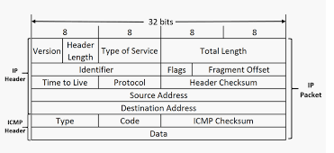
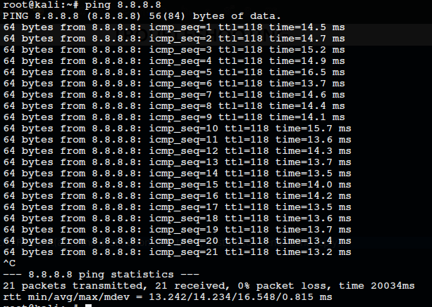
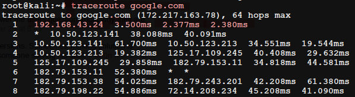
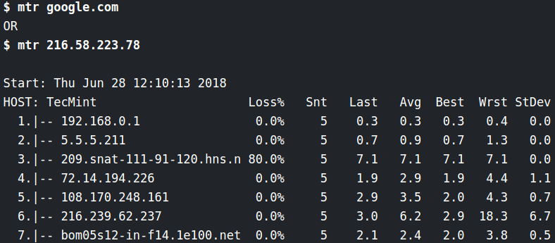

TROUBLESHOOTING
Error-detectionError-recovery
Verifying
Connectivity
:
ICMP : Internet Control Message Protocol

Ping : lets u send a special type of ICMP message called an Echo Request(asks the destination if its there, destination sends echo reply).

TraceRoute
:
A utility lets u discover the path between two nodes, and gives u information about each hop along the way.
ICMP time exceeded messade
for each route- 3 packets.

tracert in windows
Long running traceroutes:
mtr - Linux/MacOS
pathping - Windows

Testing
Port
Connectivity
:
Problems in the transport layer.
Tools:
netcat - linux/macOS
Test-NetConnection - Windows
Send application layer data to the listening server